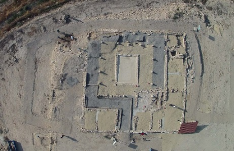
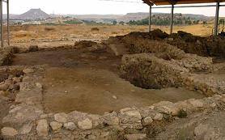
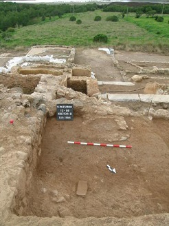

|
MURCIA ROMANA Para constatar la presencia de poblamientos en la Región de Murcia tenemos que remontarnos a la protohistoria. De la época cartaginesa el mayor exponente es Qart-Hadast (Cartagena) fundada en el año 229 a.e.c. y gobernada por la familia de los bárquidas. En el 209 a.e.c. como consecuencia de la II Guerra Púnica, Roma conquista la ciudad, acabando con el emplazamiento cartaginés. La nueva ciudad romana, Cartago Nova se convirtió en un centro fundamental para la expansión romana en Hispania. Se produjo un intenso y rápido proceso de romanización del territorio circundante, desarrollándose importantes núcleos de población como Begastri (Cehegín), Eliocroca (Lorca). Prosperaron las villas de explotación agrícola y ganadera, y las factorías de producción. De estas villas y factorías quedan restos arqueológicos en la Región en Los Torrejones (Yecla), La Alberca (Murcia), Villaricos (Mula), La Quintilla (Lorca), Los Cipreses (Jumilla) y en la zona de Mazarrón y Águilas. A partir del siglo IV la decadencia de Romana provoca la decadencia de la región y provoca la irrupción de lo denominados pueblos bárbaros que saquean Cartago Nova en el 415 por los vándalos. Después serán los visigodos los que tomaran el control del Conventus Carthaginensis. LORCA:
Eliocroca. El Itinerario de Antonino sitúa
esta "mansio" entre Carthago Nova y Ad Morum, y las actas del
Concilio de Elvira (300-302). Abundan de cerámicas tardorromanas
(siglos IV al VI) en la zona del Castillo. Las excavaciones de
La Quintilla han permitido documentar una villae, con mosaicos,
pinturas y esculturas.También destaca la villa de El Villar de Coy y los cuatro miliarios en distintos puntos de la Vía Augusta
(El Hinojar, Baldazos, Lorca y La Parroquia) ALHAMA: Termas de origen romano, reutilizadas en época árabe. PUERTO LUMBRERAS:
Destaca el yacimiento arqueológico de Aljibe de Poveda, con
restos de una villa romana de época altoimperial. El yacimiento,
se localiza en la pedanía lumbrerense de El Esparragal.
En las cercanías del panteón sacaron a la luz un importante conjunto balneario perteneciente a una villa rural del siglo III. El Casón en su interior conserva tres fosas donde se depositaron sendos sarcófagos. Es de una sola nave de bóveda de medio punto con dos absidiolos a ambos lados. La puerta principal esta orientada a la salida del sol. YECLA: De época ibérica se han hallado restos en el El Pulpillo, El cerro del Castillo, y el Cerro del Los Santos, donde se situaba un importante santuario ibérico, donde se localizo la Dama Oferente o Dama de Yecla, entre una treintena de esculturas en piedra.
BULLAS:
La villa romana de Los Cantos se ubica en la cuenca del río
Mula, en el término municipal de Bullas, en las cercanías del
caserío localizado en las afueras de la localidad de
Bullas, en la carretera que une esta localidad con Zardadilla
de Totana.
 Foto: um.es CIEZA: La calzada romana de los Grajos. Se localiza en las proximidades del Abrigo de los Grajos. Mide unos 100m de largo por tres de anchura. Su estado no es muy bueno.
CARAVACA:
El yacimiento romano de La Encarnación se
encuentra a escasos kilómetros de Caravaca, a un kilómetro de
la pedanía de los Prados, en la
carretera de Lorca a Caravaca hay un desvío señalizado al
yacimiento.
El primer edificio es un templo de orden jónico, octóstilo con una ancha cella, con columnas estriadas, basas áticas y capiteles jónicos. El segundo templo es de menores dimensiones que el anterior, también de orden jónico, tetrástilo, con un amplio pronaos y una cella que los constructores del templo encajaron en la plataforma rocosa, horadada y sobre la cual levantaron los muros del templo con sillares. El templo se conservó hasta en la edad media se utilizo como cantera y se edificó sobre la actual ermita. Dicen que es un lugar mágico. En noviembre de 2020, en las inmediaciones del tanatorio, cerca del cauce del río Argos, se ha descubierto un molino hidráulico romano, fosas de época ibérica, una necrópolis y restos de silos medievales. FUENTE CAPUTA: Se han conservado los restos de lo que debió ser una villa, en el paraje conocido como Abrevadero de la Fuente del Capitán. En la margen izquierda de la carretera se conservan algunos restos de muros, junto con abundante cerámica romana en superficie de época altoimperial. Hace unos años se documentó el impluvium y el hypocaustum. Un tractor sacó una bañera, lo que hace pensar en la existencia de un pequeño establecimiento termal, bien asociado a la villa, bien asociado a la Fuente Caputa. En sus alrededores además de la presa situada a dos kilómetros, esta la calzada romana localizada en las proximidades de Mula y cuyo trazado original probablemente pasaría junto a este establecimiento.
CALZADA ROMANA DE
YÉCHAR: La calzada romana de Yéchar es uno de los tramos mejor
conservados de la Región de Murcia, Mula. Se trataría probablemente
de una via secundario que discurría desde Villaricos a Archena, enlazando con la gran
vía romana Saltigi-Carthago Nova.
ACUEDUCTO DEL PARAÍSO: El acueducto moderno esta levantado con toda probabilidad sobre restos romanos, se encuentra en la rambla del Paraíso, Cehegín. La acequia que canaliza el agua como el propio acueducto debieron tener un origen romano, ya que en su base hay varios sillares trabajados, e incluso algunos caídos en la propia rambla, que parecen ser de factura romana. VILLARICOS DE MULA: Los restos se localizan en la margen izquierda del río Mula. En la Villa se han hallado varias de las estancias algunas pavimentadas con mosaicos, aunque éstos se hallaban en ocasiones muy deteriorados y alterados por transformaciones posteriores. Entre los espacios documentados destacan las termas, en las que se encontró el caldarium y el laconicum. También se halló la cisterna. La villa se ha datado en el siglo I. Se mantuvo habitada hasta inicios del siglo VI, cuando pasó a usarse principalmente como necrópolis. También destaca el «torcularium» o almazara para la producción de aceite. Tiene un ingenioso sistema de conducción que canalizaba el aceite hasta la pileta en la que se almacenaba. En julio de 2021, las excavaciones arqueológicas llevadas a cabo han sacado a la luz un magnífico sarcófago de época visigoda datado entre los siglos VI y VII.
 Ver Villas romanas NECRÓPOLIS IBERA DE LOS NIETOS: El yacimiento ibérico de Los Nietos se localiza en el término municipal de Cartagena, en la pedanía de Los Nietos, sobre una loma situada a unos 100 m. al Oeste de la carretera de los Belones a Los Nietos, en la finca Las Mateas. Se han hallado materiales cerámicos y metálicos hallados durante la excavación de su necrópolis. Es el único poblado y necrópolis ibérica hallada junto a la costa murciana. VILLA ROMANA DE PATURRO: Los restos de la villa romana del Paturro se localizan en las proximidades de la localidad cartagenera de Portman. La villa tenia dos usos, uno doméstico, en los que vivían los dueños de la villa en el que se han exhumado fragmentos de esculturas, entre las que destaca una cabeza de sátiro sonriente, restos de pintura mural, de pavimentos de mosaicos bícromos y parte de unas termas. En el segundo sector, de carácter industrial, se excavaron varías estructuras, balsas relacionadas con el trabajo de salazón y que fueron objeto de constantes transformaciones a lo largo de más de un siglo. También se halló una rampa realizada con mortero unida a dos grandes balsas y sobre la cual se hallaron restos de conchas marinas y un anzuelo de pescar. Foto: laopiniondemurcia.es
 Ver Villas romanas MURCIA: En los alrededores de la ciudad los hallazgos han sido numerosos y de excepcional importancia. De época íbera destacan el Santuario de la Luz, vinculado con el poblado del Verdolay, y la necrópolis del Cabecico del Tesoro. De época tardorromana-visigoda, destacan la Basílica de Algezares, y el Martyrium de la Alberca, monumento funerario paleocristiano, único en la península.
MONTEAGUDO:
De época romana destacan los restos de la calzada romana y la
existencia de un pequeño complejo urbano fundado a principios
del siglo I en el solar de la antigua iglesia parroquial. En
septiembre de 2021, se visita la restauración y musealización de
los restos romanos hallados junto a las fortalezas de Ibn
Mardanis, el Rey Lobo.
ALCANTARILLA:
Poblada desde la prehistoria. En las proximidades de la casa de
Cayitas, debió existir un poblado ibérico allá por el siglo V
a.e.c., con su necrópolis por la actual calle Hurtado Lorente.
De la misma época es el asentamiento ibero de cabezo de El Agua
Salada, que permaneció hasta la época romana.
AGUILAS:
En la isla de El Fraile, en septiembre de 2020. Las excavaciones
llevadas a cabo por expertos de la UMU han permitido encontrar
un almacén romano de época tardía formado por ánforas
procedentes del norte de África, algunas de las cuales contenían
restos de pescado. LOS ALCÁZARES: En enero de 2022, la excavación para buscar el rastro del Rey Lobo descubre los restos de una villa romana. Muros de adobe romanos enlucidos y pintados al fresco con colores, sin figuras y con señales de picadas para haber sido repintados encima. Junto al actual hotel La Encarnación. Data de época Flavia. ARCHENA: Destaca el yacimiento romano hallado en el balneario, las termas de época romana datadas en el siglo I. De época ibera destaca el yacimiento del Tío Pío. |
|||||||||||||||


, l